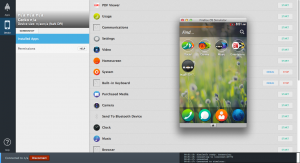

1月272014 Alfredo Firefox OS 的 MP4 container 簡介 前言: MP4 是目前最常見的影音格式之一，在這篇文章中，我們主要在介紹 container 的格式，以及 MP4 在 Firefox OS 中的現況跟常見問題。 MP4 的 container 格式主要是定義在 ISO/IEC 1449612 [1] 中，從最早期的 Apple Quicktime...
1月202014 不來恩 研發人員的小工具：APP Manager 的簡易上手  App ManagerApp Manager 最近在 Firefox 瀏覽器有釋出一個新工具「應用程式管理員 (APP Manager)」，只要按照這篇 MDN 文件的步驟下載與安裝 (https://developer.mozilla.org/zhTW/docs/Mozilla/FirefoxOS...
1月162014 等一下先生 CGDB – 更好用的 GDB cgdblogo 我們在開發過程中，常常會使用 GDB 來找 bug，但是它是純文字介面，使用上還是有些不便，幸好現在可以找到不少 open source project 來改進這些問題，今天所介紹的 CGDB[[1]](https://cgdb.github.io/) 工具，是我使用過覺得相當好用...
1月62014 Thomas gonk-misc，透過 AOSP build system 來 build Firefox OS 如果你對如何 build Firefox OS 不熟悉，請先閱讀 http://tech.mozilla.com.tw/posts/2786/easy3stepstobuildfirefoxos 。當我們用 config.sh nexus4 下載 source code 完畢，在工作目錄底下會有兩套...